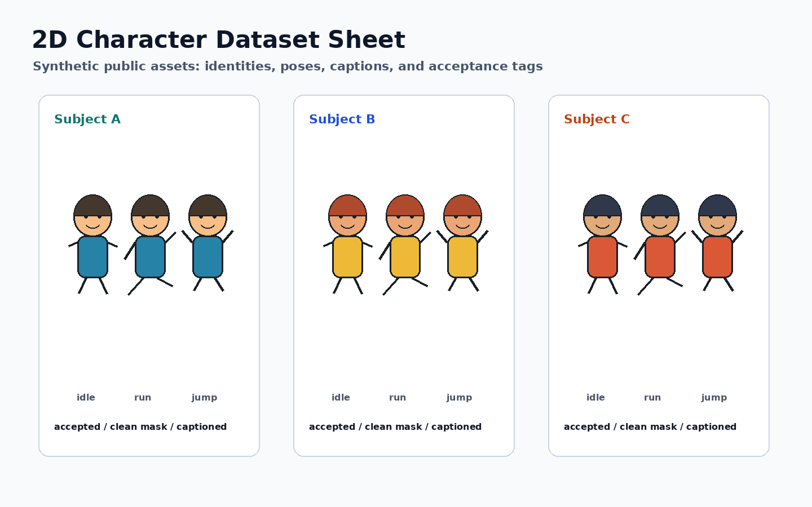
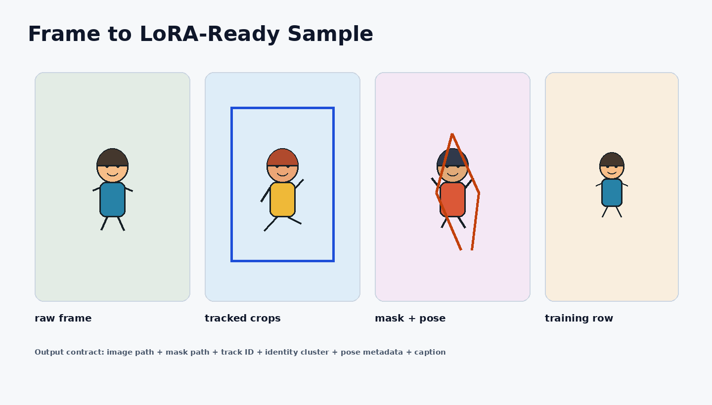

Pipeline Core
Python CLIs, OmegaConf configs, stage manager, resource monitor, and metadata I/O.
CPU-safe demo for a GPU-heavy ML workflow
This public demo shows the reviewable surface of the pipeline: frame extraction, YOLO tracking, ToonOut-style segmentation, identity clustering, pose conditioning, captioned datasets, and LoRA training snapshots.

Product results
A public, mock-safe demo layer for a GPU-heavy character LoRA pipeline.

End-to-end flow
The public demo uses deterministic synthetic data, so reviewers can evaluate the architecture without private footage, model files, API keys, or a CUDA workstation.
Demo scenarios
Deliverables
Screenshots and video
These assets are committed with the static site and mirrored into the main portfolio media gallery.
Architecture
Python CLIs, OmegaConf configs, stage manager, resource monitor, and metadata I/O.
YOLO/ByteTrack tracking, ToonOut-style masks, DWpose previews, and identity clustering.
Captioned LoRA datasets, kohya/diffusers configs, checkpoint metrics, and prompt tests.
Static manifest JSON, synthetic screenshots, WebM video, GitHub Pages, and Docker/Nginx.
Runbook
pip install -r requirements/core.txt -r requirements/dev.txtpython scripts/demo/run_demo_pipeline.py --skip-pipelinepython -m pytest tests/demo tests/test_end_to_end_pipeline.py -qpython -m http.server 8080 -d portfolio-web